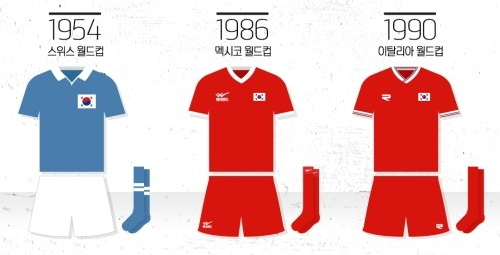
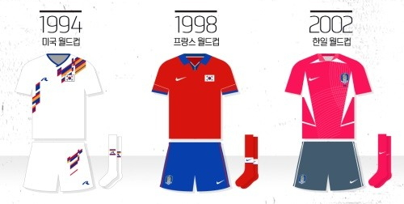
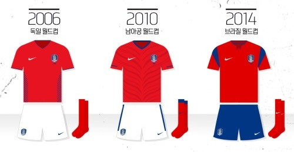
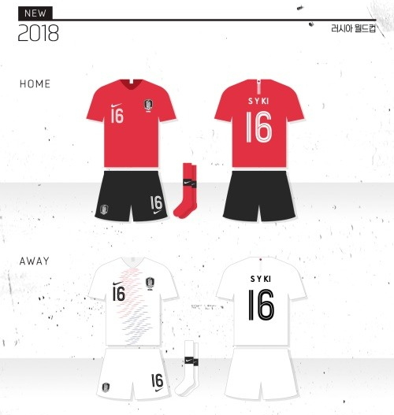

1954년, 1986 ~ 1990년 월드컵
1954년 스위스 월드컵 우리에겐 주로 흑백사진이 익숙한 이 당시의 유니폼은 지금과는 달리 하늘색 상의에 흰바지였다. 어설프게 박음질 해놓은 태극기는 휴전 이후 급박하게 출전할 수밖에 없었던 당시의 상황을 말해준다.
1986 멕시코 월드컵은 한국대표팀의 상징으로 자리 잡은 붉은색 유니폼을 착용한 첫 번째 월드컵이다. 삼성물산의 자체브랜드였던 위크엔드 로고가 박혀있고 V자넥을 채택한 것이 특징이다.
1990 이탈리아 월드컵의 유니폼은 올드팬들에게 익숙한 브랜드 라피도가 처음 제작했다. 기존의 붉은색은 유지하면서 원정 경기 유니폼만 상하의 모두 흰색으로 바꿨다. 목과 소매 부분에 태극문양을 상징하는 붉은색과 파란색 실선이 들어간 것이 특징이다.
1994 ~ 2002년 월드컵
1994년 미국 월드컵에서는 전통적인 붉은색을 버리고 ‘백의 민족’에서 영감을 받아 흰색을 기본색상으로 채택했다. 여기에 색동무늬를 입혀 독특한 디자인이 완성됐다.
1998년 프랑스 월드컵에선 다시 붉은색으로 돌아왔다. 태극문양을 본 따 붉은색 상의와 파란색 하의를 입었다. 유니폼에 ‘태극마크’가 찍혀있던 마지막 유니폼이기도 하다. 참고로 많은 올드팬들이 기억하는 붉은색 상의에 태극물결이 그려진 일명 ‘코카콜라 유니폼’은 프랑스월드컵 예선까지만 입었다.
2002년의 유니폼은 뛰어난 성적만큼이나 좋은 평가를 받았다. 월드컵 개최국이라는 특수성을 감안해 제작사인 나이키가 특별히 신경썼다. 기존의 붉은색과는 다르게 좀 더 밝은 빛을 띄고 있었고 전면에 여러 개의 가로줄과 세로줄이 교차하는 것이 특징이다. 처음으로 원정 유니폼이 파란색이 아닌 흰색으로 바뀌었다
2006 ~ 2014년 월드컵
2006년 독일월드컵에서는 한복 디자인에서 착안해 94년 월드컵 이후 V넥을 다시 사용했다. 옆구리에는 호랑이를 연상시키는 얼룩무늬가 있었고 뒷면에는 작은 붓글씨로 ‘투혼’이라는 글자가 새겨졌다.
2010 남아공 월드컵에서도 V넥은 유지됐다. 유니폼 상의에는 희미하게 호랑이 무늬가 그려져 있었다. 붉은색과 파란색이 적절히 조화를 이루며 역대 가장 호평 받은 유니폼 중 하나다.
2014 브라질 월드컵에서는 일명 ‘가방끈 디자인’으로 유명했던 유니폼을 착용했다. 독일월드컵부터 쓰인 V넥을 버리고 차이나넥을 채택했다. 심플한 디자인과 어깨에 들어간 띠가 특징이다.
2018 러시아 월드컵
2018 러시아월드컵에서 입게 될 새 유니폼이 공개됐다. 태극기와 ‘한류’에서 영감을 받은 이번 유니폼은 한국적이면서도 세련된 디자인이 특징이다. 전통적인 붉은색 상의와 태극기 4괘에서 비롯된 검정색 하의가 조화를 이룬다. 호랑이 문양의 대표팀 엠블럼 역시 검정색과 흰색의 조합을 통해 단순하면서도 세련된 디자인으로 변신했다. 붉은색과 검정색의 조합은 98년 프랑스월드컵 예선 이후 20년만이다.